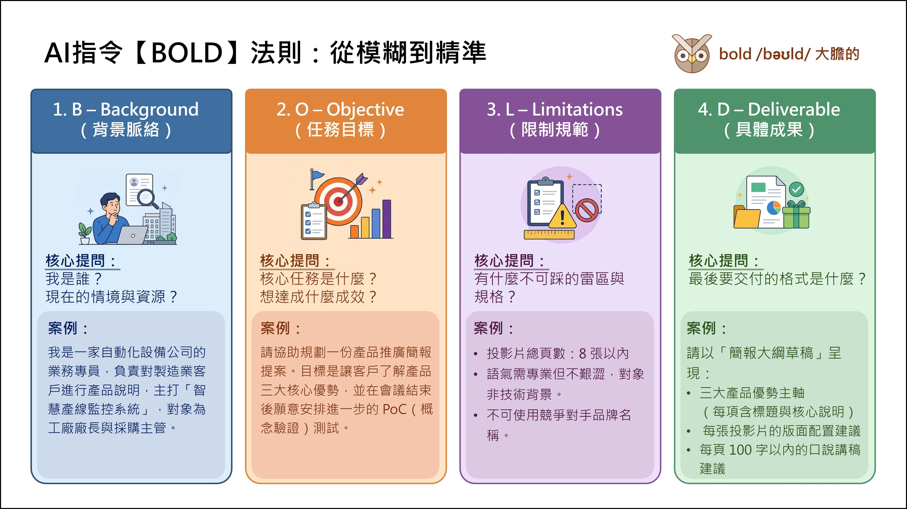

1
AI 協作四步驟
📌 練習主題：智慧產線監控系統 產品推廣簡報
詢問原則（BOLD）
| 字母 | 代表 | 核心提問 |
|---|---|---|
| B | Background 背景脈絡 | 我是誰？現在的情境與資源？ |
| O | Objective 任務目標 | 核心任務是什麼？想達成什麼成效？ |
| L | Limitations 限制規範 | 有什麼不可踩的雷區與規格？ |
| D | Deliverable 具體成果 | 最後要交給我的格式是什麼？ |

AI 協作四步驟（問定骨生）

【問】釐清思路
使用時機：讓 AI 先提問，幫你想清楚：不要急著叫 AI 做簡報。先讓 AI 問你問題，把目標、對象、重點釐清後再動手，成果會好很多。
📌 Prompt — 釐清思路
我現在要規劃一份【智慧產線監控系統】的產品推廣簡報，
報告對象為【工廠廠長與採購主管】
在正式產出前，請扮演【資深業務顧問】
協助針對此任務的『目標受眾、核心重點、預期效益』向我提出 5~8 個關鍵問題，
幫助我釐清思路
在我們討論未完成前，先不要開始做簡報
📌 Prompt — 「結構化的定案資料」，討論匯出MD檔
我們剛才的討論已經完成，請將討論結果整理成一份 MD 檔，
作為後續開新對話時的「背景資料」使用。
請依以下結構整理：
1. 任務背景（這份簡報是做什麼、給誰看）
2. 已確認的核心重點（條列，只列我們討論中確定的內容）
3. 尚未決定 / 待補充的部分（如果有的話）
輸出時請放入 Markdown 程式碼區塊，方便我直接複製存檔。
- 目的：用於討論結束後整理結論，方便日後開新對話或免費額度用盡時，直接帶入背景接續進度。
- 注意事項：【Prompt：以上討論結果，協助生成md檔，作為參考資料】AI會生成一份對話流水帳。
【定】產出草稿
Markdown（MD）結構化：
- 運用 MD 與 AI 工具對話，層級分明可清楚表達格式需求，讓 AI 生成內容更具結構化、省時且易讀。
- 語法：【# 標題層級 (#、##、###)】、【- 項目符號】、【**粗體** 強調重點】
📌 Prompt — 產出草稿，情境１：完全交給 AI 決定架構
根據我們剛才討論的內容，產出簡報文案草稿。
請你依據討論內容，自行判斷最適合的內容架構與章節安排，
並說明你為什麼這樣安排（簡短說明即可）。
輸出時請將完整內容放入程式碼區塊（Code Block），方便一鍵複製。
➜ 適合：還沒想好怎麼分章節，想先看看 AI 怎麼安排，再決定要不要調整
📌 Prompt — 產出草稿，情境２：先問 AI 建議架構，但不急著生成內容
根據我們剛才討論的內容，請先不要急著寫草稿。
請你先提出 2~3 種可能的「內容架構」安排方式（列出章節標題即可），
並簡短說明每種架構的適用情境，等我選定方向後再開始產出文案。
➜ 適合：想要參與架構決策，但不想自己從零開始想，讓 AI 先給選項
【骨】邏輯骨架校準
▶️ 使用時機：
內容確認後，進入骨架規劃。這一步只產大綱，不急著做出成品。
- AI 很容易「跳級」，稱之為「AI 會過度積極」——你只要一個簡報大綱，它卻給你整份簡報。
- 【骨】的關鍵是明確指令：只出邏輯大綱，不寫內文。
- 通常 1 分鐘對應 1~1.5 張投影片（一般節奏）
- 5 分鐘報告 → 建議 8-10 張 ／ 10 分鐘報告 → 建議 12-15 張
📌 Prompt — 大綱校準１：一般情形
現在進入【邏輯骨架校準階段】。
請根據我們討論完成的「智慧產線監控系統產品推廣簡報」，
針對【工廠廠長與採購主管】擬定簡報大綱。規範：
- 規劃約【8】張架構
- 每頁須含主題與核心觀點，禁止跳級產出內文或旁白
- 對數據頁面（如：效益數據、導入案例成效），請標註建議採用「便當盒排版法」
- 對流程頁面（如：導入步驟、合作流程），請標註建議採用「蛇形流程」
- 產出後立即停止，等待進一步指令
- 輸出時請放入 Markdown 程式碼區塊，方便我直接複製存成 .md 檔
【生】選擇工具，產出簡報
| 類型 | 工具 | 特色 | 適合場合 |
|---|---|---|---|
| 圖形簡報 | NotebookLM | 圖文並陳、快速吸睛 | 對外發表、高層報告、大型會議 |
| 傳統簡報 | PowerPoint 簡報 | 可編輯、內容清晰、易修改 | 內部提案、需留底的文件 |
| 網頁簡報 | Gemini → HTML 程式碼 | 可線上分享、互動感強 | 數位發送、遠端說明 |
📌 Google 簡報
邏輯大綱已確認，視覺風格已確認。
直接建立 Google 簡報。
- 內容需填充每張投影片之正式文案，聚焦三大產品優勢
- 呈現對象：工廠廠長與採購主管
- 產出後請顯示「匯出成簡報」的連結
- 尺寸：16:9
📌 HTML 程式碼簡報
邏輯大綱已確認，視覺風格已確認。
使用 HTML 與 Tailwind CSS 程式碼製作數位簡報。
- 結構規範：數據頁採「便當盒排版」、流程頁採「蛇形流程」
- 請將結果以程式碼區塊呈現，並同步啟動「預覽 (Preview)」視窗
- 尺寸：16:9
2
NotebookLM 文件智慧整合應用
上傳【骨架大綱 .md 檔】後，用以下 Prompt 結合視覺規格匯出簡報草稿。
匯出簡報
📌 Prompt — 圖形簡報（NotebookLM）
請根據上傳的「智慧產線監控系統推廣簡報大綱」，
依照大綱原有的頁數與順序，逐頁補充完整內容，不可新增或刪減頁數。
# 角色設定
你是一位資深業務顧問兼簡報設計師。
# 整體視覺風格（全份簡報統一）
- 風格基調：現代科技感、專業商務感
- 色系：三色限定
主色：深海藍 #1E3A5F
輔色：科技銀 #8C9BA5
底色：暖米白 #F5F0E8
- 視覺質感：無陰影、無漸層、幾何平整
# 每頁輸出格式
### 投影片第 X 張：[標題]
- 視覺風格建議：[從以下擇一，須符合整體視覺風格]
- 數據頁 → 現代數據儀表板風（KPI 數字卡片）
- 流程頁 → 流程路徑圖（蛇形流程）
- 多重並陳頁 → 便當盒排版（大小格混排）
- 封面／結語頁 → 極簡向量插畫風格
- 版面配置：[便當盒 / 蛇形流程 / 中心對焦，擇一]
- 核心列點：[3 點，每點不超過 20 字]
- 口說講稿：[100 字內，語氣專業親切]
# 注意事項
所有內容必須 100% 基於上傳的大綱來源，禁止憑空新增資訊。
所有投影片必須使用同一套色系與視覺基調，維持整份簡報一致性。